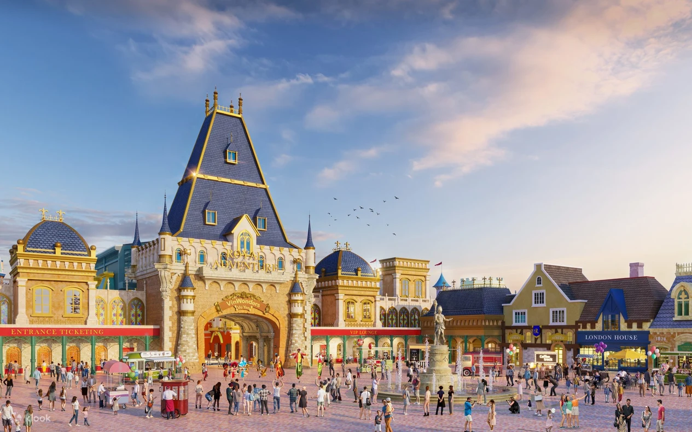
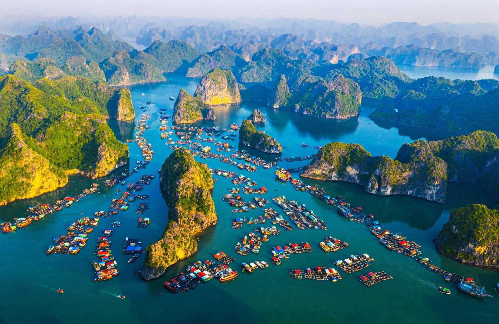
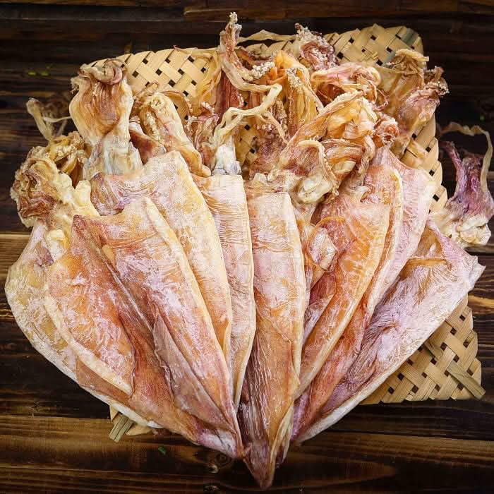
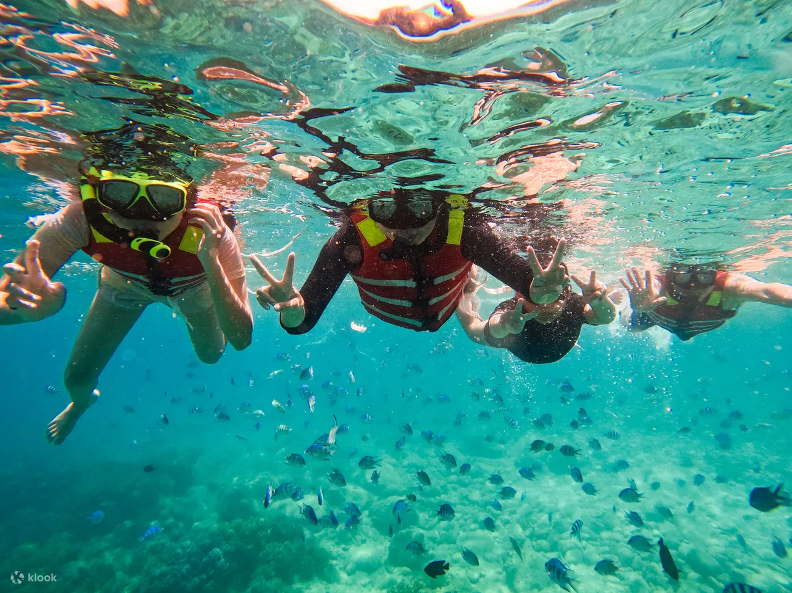

文化と人々
ハイフォンは「港町の赤い花の街」として知られ、力強さと温かさを併せ持つ人々が暮らしています。港の歴史を背負い、勤勉で誇り高い精神が根付いています。街には赤い花・フラワーロードが象徴的で、やさしく穏やかな雰囲気が漂います。伝統文化を大切にしながらも、近代化やグローバル化を積極的に取り入れ、教育水準も高く、未来に向かって成長し続ける都市です。強いコミュニティの絆があり、お祭りやイベントを通して地域全体が団結する姿を見ることができます。
観光地 ＊ 名所
ハイフォンは豊かな自然と文化を誇る観光都市です。透明度の高い海と壮大な岩の景観を楽しめるランハー湾やカットバー島は、世界中の旅行者の注目を集めています。市街地には歴史的建築が残り、ハイフォン大教会や象徴的なフラワーロードが人気です。レジャーに最適なドーソンビーチでは海風に包まれながらゆったり過ごせます。大自然・歴史・街歩きの全てが楽しめる魅力に溢れています。
ハイフォンのグルメ
港町ならではの新鮮な海産物を中心とした料理は、訪れる人々を魅了します。名物のバンクアやネムクアベー、香り豊かな海鮮焼き、さらにハイフォン独自の味付けのフォーなど、多彩な料理が楽しめます。街中には活気ある屋台街が並び、甘味やローカルドリンクを味わいながら街の雰囲気を体験できます。食の豊かさはハイフォンの魅力の大きな要素です。
特産品とお土産
ハイフォンのお土産は海の恵みが中心で、干しエビや海産加工品は特に人気です。港町ならではの深い味わいの魚醤も料理好きに喜ばれます。赤い花をモチーフにした工芸品は、街の象徴として美しい思い出となるでしょう。また、コーヒーや茶葉、ローカルスイーツなど、おしゃれで実用的な商品も多く、お土産選びが楽しくなる地域です。
体験とアクティビティ
港を巡るクルーズや釣り体験、海辺でのBBQは、ハイフォンの魅力を直接味わえる活動です。自転車で街を回ると、地元の生活や街並みをより身近に感じられます。季節ごとに開かれるフェスティバルでは地元の情熱を感じ、島のエコツアーでは自然保護と観光の共存を体験できます。アクティブに過ごしたい旅行者には最適な都市です。